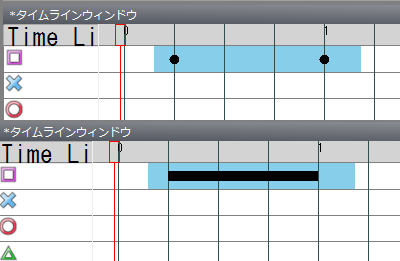

到上一步为止只完成了标记的放置。接下来设置标记的位置、角度和种类。
首先说明标记的摆放方法。
想直观地摆放时，选中标记后在游戏窗口内拖动摆放。

如果想固定标记可摆放的位置，可以使用网格。
显示网格时，鼠标只能把标记摆放在网格的交点上。（用网格按钮切换）

微调标记位置时，使用方向键（箭头键）。（通常为1px，+Shift键为10px，+Control键为5px。可在设置中更改）
另外，要复制同种类上一个标记的位置时，按Ctrl+Q。
此外，使用位置角度读取保存工具或几何工具可以简化摆放工作，但本指南面向新手，这里省略。
接下来说明标记的角度。
选中标记后，在游戏窗口内标记以外的地方拖动即可决定角度。
此时按住Shift键，可以将标记的角度限制为某个角度的倍数。（默认为10度。可在设置中更改）

另外，要复制同种类上一个标记的角度时，按Ctrl+R。
同样，使用位置角度读取保存工具或几何工具可以简化摆放工作，但本指南面向新手，这里省略。
接下来说明标记的种类。
前面已经说明过，标记的种类取决于放置时的垂直位置。
要更改已放置标记的种类，按住Shift拖动标记，在想要的种类对应的垂直位置放下即可。
按住Ctrl拖放会复制标记。
或者，通过范围选择用Ctrl+C复制后再放置标记，就会复制到放置的位置。（别忘了用Ctrl+Shift+C清空复制缓冲区）
说明长按（或HOLD）的制作方法。
在长按开始点（HOLD开始点）放置标记。
再在长按结束点（HOLD的情况下，在下一个同种类标记之前）放置标记，然后用范围选择选中这两个标记。
此时按Ctrl+F，就会变成长按（HOLD）。
在选中长按的状态下按Ctrl+Shift+F，即可将其拆分。

标记的设置到此结束。
下一步